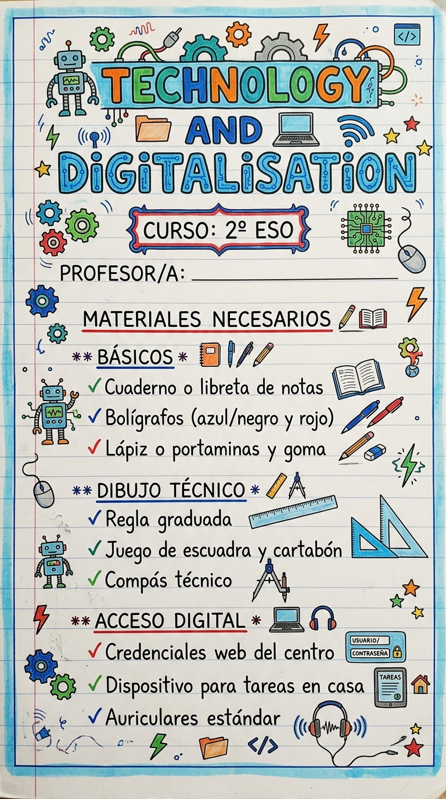
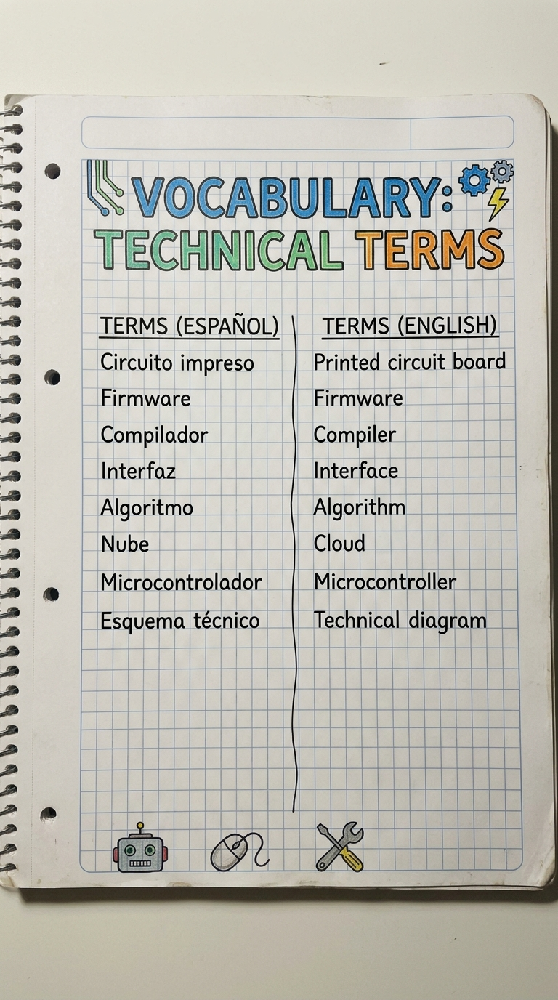

Guía de Inicio y Requisitos para el Primer Día de Clase
La materia se basa en un enfoque práctico e investigador (Learning by Doing / Aprendizaje Basado en Proyectos), combinando trabajo individual y colaborativo.
Diseño, construcción y entrega de memorias de proyectos tecnológicos individuales y en equipo.
Exposición pública de soluciones técnicas, prototipos y contenidos tanto en español como en inglés (CLIL).
Pruebas escritas/digitales, retos de programación, láminas de dibujo técnico y revisión del cuaderno digital/físico.
Herramientas digitales que utilizaremos a lo largo de las distintas Unidades Didácticas:
Las normas del aula, el uso de las instalaciones del taller y los horarios de clase se rigen por el reglamento oficial del IES Kursaal. Puedes consultar la información detallada y actualizada en la sección de normas de la plataforma digital.
Haz clic en cualquiera de las imágenes para ampliar la vista previa:

